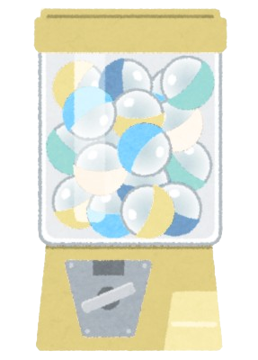
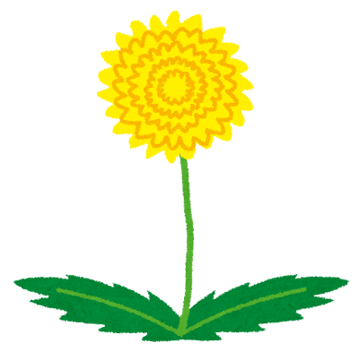
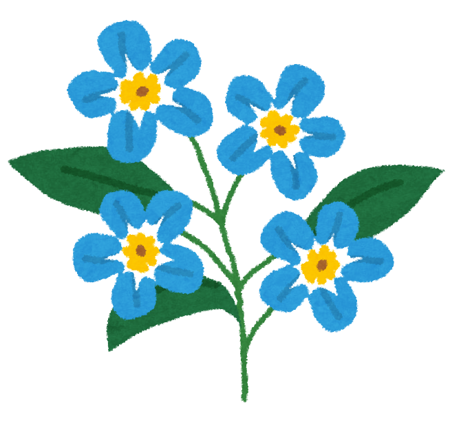
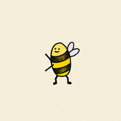

(Ahem. Kalau kamu sekarang lagi pakai HP, Coba buka web page ini di PC deh, lebih rapi soalnya)
Introduction! (˶>⩊<˶)
Halo! Kenalin, aku Shafiyya Mahira Putri dari kelas XI Newton 1, salah satu anggota dari Eskul Coding SMAN 2 Medan.
Saat ini, aku lagi seru-serunya belajar dasar-dasar web development nih! Web page ini adalah salah satu proyek pertamaku untuk menampilkan berbagai hal yang sudah aku pelajari selama mengikuti ekskul coding. ( •̀ ᗜ •́ )
(BTW, page ini tuh ngambil inspirasi dari profile-profile di MySpace dan SpaceHey)
Quick Fun Facts about me:
Beberapa nama panggilanku: Shafiyya, Piyya, Shaf (terserah sih mau manggil apa, asal jangan ada sufiks nama di belakangnya yaa. Geli dengernya (targeted) (￣▽￣)).
Selain hobi baca komik, aku juga suka banget menggambar dan koleksi merch.
Aku paling suka mata pelajaran seni budaya dan bahasa Inggris di sekolah.
Tim bubur diaduk! |･ω･)
Terima kasih sudah mampir ke web page ini! See you around! ദ്ദി(˵ • ̀ ᴗ - ˵ )
Kenapa Kamu Harus Mulai Belajar Coding! ( ˶°ㅁ°)!!
Banyak orang mengira coding cuma buat yang jago matematika atau yang kuat begadang semalaman. Padahal kenyataannya, coding itu adalah wadah untuk berkarya dan berkreasi, enggak jauh beda dengan melukis, mendesain, atau menyusun Lego.
Punya website atau web page sendiri itu seru banget karena kamu punya kebebasan mutlak buat numpahin semua ide kreatif tanpa batas. Kamu bebas bereksperimen mulai dari nentuin kombinasi warna, mengatur tata letak komponennya biar kelihatan rapi, sampai nambahin berbagai animasi interaktif biar tampilannya makin hidup dan gak ngebosenin, persis kayak halaman web yang lagi kamu lihat sekarang ini! ദ്ദി(˙ᗜ˙ )
Selain seru, belajar coding juga melatih cara berpikir yang lebih logis dan terstruktur. Setiap kali menemukan bug dan mencari solusinya, kamu sedang mengasah kemampuan problem solving yang berguna bukan cuma di depan layar, tapi juga dalam kehidupan sehari-hari.
Jadi, jangan cuma jadi penonton di internet. Saatnya jadi kreator, mewujudkan ide-ide kerenmu, dan membuat karya yang bisa dinikmati banyak orang!
Yuk, mulai perjalananmu sekarang dan gabung ke Eskul Coding SMAN 2 Medan! (˶˃ ᵕ ˂˶) .ᐟ.ᐟ
Yuk tes seberapa jauh kamu tahu tentang web development!
1. HTML singkatan dari:
2. Tag HTML manakah yang benar untuk membuat judul dengan ukuran font paling besar?
3. Bahasa desain yang digunakan untuk menghias dan mengatur tata letak elemen pada halaman website adalah:
Music Gachapon?! Σ(°ロ°)
Putar gachapon untuk dapetin lagu (yang mana lagu Jepang semua by the way...) secara acak dari playlist-ku (selain yang di top rotation tadi ya...)! Setiap lagu ada raritynya, karena mana asik kalo enggak gacha... (≖⩊≖)
SSR ★★★ — 15%
SR ★★ — 35%
R ★ — 50%

Klik Mesin Gachapon Diatas!
Papan Pesan (Sticky Notes!)
Yuk, baca pesan-pesan random di mading Ekskul Coding!
Klik tombol di bawah untuk membuka salah satu kertas memo yang tersedia!
By the way, pesan yang muncul bakal dipilih secara acak, jadi setiap klik bisa kasih pesan yang berbeda (atau sama...)! ദ്ദി(˵ •̀ ᴗ - ˵ )
Ayo join eskul coding!
Minigame? 〜(꒪꒳꒪)〜
Temukan lebah yang bersembunyi di salah satu bunga dibawah!


3x kesempatan!
Kamu berhasil menemukan lebahnya!

Setelah berhasil menangkapnya, kamu membiarkan lebah itu pergi.
(klik disini!)